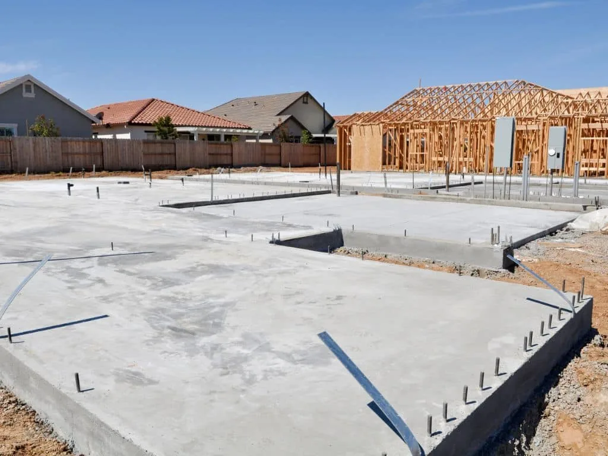
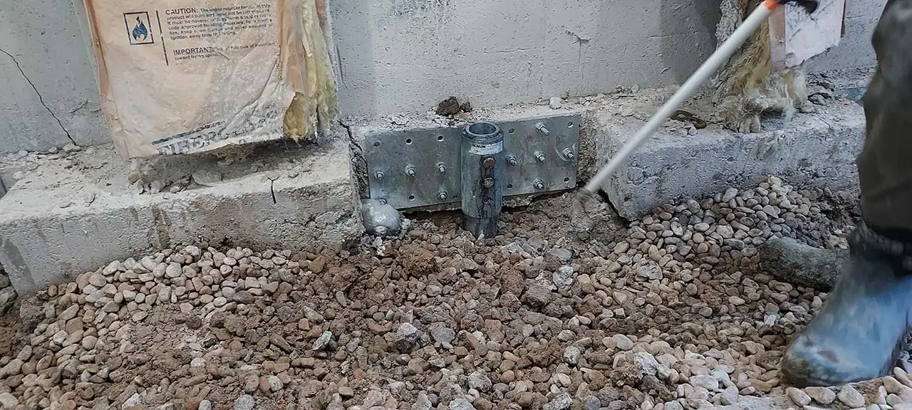
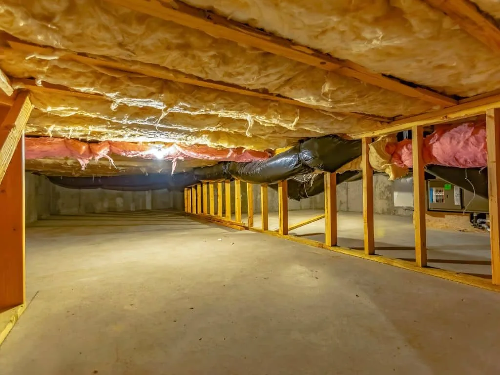
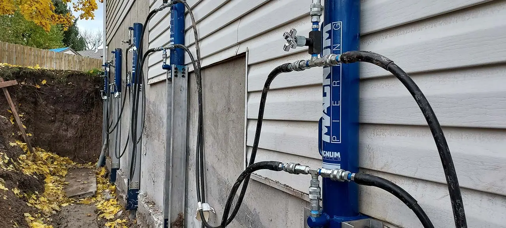
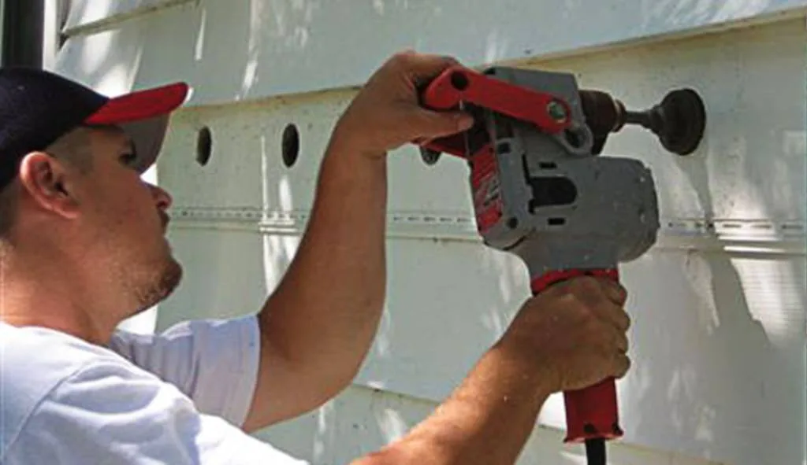

Share this Article
When homeowners start to notice signs of foundation damage, acting quickly is essential. Even small cracks and signs of shifting can lead to expensive repairs and losses in home value if not addressed promptly. But how much does a foundation repair cost?
In this post, we’ll provide a comprehensive answer to this question. We’ll also discuss the primary factors that affect foundation repair costs, as well as how homeowners can manage these costs and find reliable contractors. Let’s dive in.
The Complexity of the Problem
The cause of a foundation issue plays a significant role in the resulting repair cost. Generally speaking, the more complex a problem is, the more expensive it gets.
So, what are some common causes of foundation problems? Here’s a quick breakdown:
Shifting
A small amount of foundation shifting is to be expected. However, if the shifting is excessive and occurs quickly, it can cause serious problems. Shifting can be repaired using a number of different techniques, including installing push piers or helical piles. The cost to repair a shifting foundation typically ranges between $700 and $25,000, depending on the severity of the issue.
Erosion
Erosion can be caused by various factors, including poor drainage, heavy rains, or even poor construction practices. Repairing an eroded foundation typically involves installing new drainage systems or reinforcing existing ones. The cost of these repairs can range from $500 to $10,000, depending on the complexity of the issue.
Bowing Walls
Another common foundation problem is bowing walls. Bowing walls occur when the foundation is not strong enough to support the weight of the structure, causing it to buckle and bend inward.
Soil testing and assessment are essential for identifying the cause of bowing walls and selecting the proper repair method. Repairs may include installing wall anchors, carbon fiber strips, push piers or helical piles. The costs for these repairs can range greatly, from $400 to $12,000.
Sinking or Settling
If the ground beneath your foundation shifts, it can cause the foundation to sink or settle. This is typically caused by poor soil conditions, improper compaction during construction, or water damage.
To repair a sunken foundation, you may need foundation lifting performed.
Type of Foundation
The type of foundation you have can also play a role in your repair costs. Here’s a summary of the most common types and their associated repair costs:
Concrete Slab Foundations
Concrete foundations often require more intensive repairs and can cost a few thousand dollars or more. This is because professionals may need to raise the house slightly to access the foundation and perform repairs.
Brick Foundations
Brick foundations are prone to cracking, leaking, and bowing with time. If caught early enough, brick foundation repairs are relatively straightforward and can cost around $350+ for repairs. For more intensive repairs, you can expect to pay several thousand dollars.
Pier and Beam Foundations
Pier and beam foundations are built on concrete piers supported by wood beams. Repairing these foundations can be costly, especially if you need to replace the entire foundation or move any support beams. However, ignoring a damaged pier and beam foundation can be even more expensive in the long run.
Basements
A home with a basement typically will have the most expensive repair costs. Basements can require extensive repair work, such as replacing walls, installing systems to prevent flooding, and reinforcing the foundation. The cost of these repairs typically ranges from $2,000 to $7,500 or more.
Crawl Spaces
Crawl space foundations can be prone to water damage and shifting. Repairs may involve installing drainage systems, waterproofing, and reinforcing walls. Crawl space repair costs can range greatly depending on the complexity of the issue.
Stem Wall Foundations
Stem walls are the vertical walls constructed between your basement and its foundation. Repairing a stem wall typically involves installing new reinforcements or replacing existing ones. This type of repair is usually costly and can range from a few hundred dollars to thousands.
Soil and Location
Soil contraction, expansion, and settlement can cause foundation drainage issues. The only way to properly address this issue is to install steel push-piers or helical piers. This repair method transfers the weight of the home from the unstable soil to the piers.
Additionally, if you live in an area with extreme weather conditions, such as high levels of rainfall or snowfall, that can also increase the cost of foundation repair. This is because these conditions can worsen existing issues and/or create new ones. The cost of repairs in these areas can range from a few hundred dollars to a few thousand, depending on the severity of the issue. Again, to get an accurate estimate, it’s best to speak with a professional foundation repair specialist in your area.
Planned Repairs
The price of a foundation repair project depends on the severity of the issue and the type of repair required. So, what are the most common foundation repair methods? Here’s a short list:
Basement Piering
Piering the basement involves excavating beneath the foundation, lifting it up, and installing hydraulic piers. This can act as a permanent solution to foundation problems if a licensed professional is hired. The cost of this repair method typically ranges from $1,000 to $3,000 per pier.
Foundation Lifting
Foundation lifting is a method used to raise slab foundations that are sinking and/or cracked. This method requires the use of polyurethane foam injections, which lift and stabilize your foundation from below. The cost of this repair method ranges from $1,000 to $3,000 per injection.
Foundation Stabilization
This repair method involves the installation of steel braces or carbon fiber strips to prevent further shifting or bowing. Steel is used for severe foundation issues, while carbon fiber is used for minor repairs. Depending on the severity of your foundation issue, this repair method can cost anywhere from $4,000 to $12,000.
Foundation Reinforcement
If the foundation shows minor instability (but is not sinking), a professional may recommend reinforcing the foundation with steel beams or plates. This method is generally less expensive than alternative repairs, costing between $700 to $5,000.
Foundation Leveling
This repair method is used to correct foundation issues caused by excess moisture, soil shifts, or settling. Foundation leveling involves using hydraulic equipment to lift the foundation and return it to its original position. This repair method ranges from $4,500 to $38,000, depending on how extensive the repairs are.
Core Foam Masonry Foam Insulation
Core foam masonry foam insulation is used to stabilize and reinforce masonry walls. This process involves injecting structural foam into the walls to improve their strength and stability. In turn, core foam insulation can help prevent moisture from seeping in, reduce energy costs, and increase the lifespan of your foundation.
Necessary Labor, Permits, and Materials
As with any type of construction project, there are certain labor costs, permits, and materials that will need to be taken into account. These can add substantially to the overall cost of your project, so it is important to investigate the details carefully before making any decisions.
Labor costs will vary depending on the complexity of the job and the availability of qualified professionals in your area. Permits are usually required for major construction projects, and some states require that a licensed professional handle the repairs.
The materials used in a foundation repair project will also vary depending on the severity of the issue and the type of repair being done. Materials such as concrete, steel, and carbon fiber are common materials used in foundation repairs and can add substantially to the project’s overall cost.
Foundation Repair Insurance Coverage
If your home is covered by homeowner’s insurance, you may be able to file a claim for foundation repair. Each insurance policy is different, so it’s important to read the fine print and understand what kind of coverage you have.
Generally speaking, most policies will cover some of the costs associated with foundation repair if it was caused by a sudden event such as flooding or a natural disaster. However, many policies will not cover foundation repair costs related to general wear and tear or long-term settling of the soil.
If your policy does not cover foundation repair, there are other options available. Some states have programs designed to help homeowners with the cost of repairs. Additionally, some contractors offer financing plans that can make it easier to manage the cost of a repair project. It’s always important to discuss these options with an experienced contractor before making any decisions.
Conclusion
As you can see, the cost of foundation repair can vary greatly depending on the severity of the issue, the type of repair needed, and other factors. It’s important to research all your options carefully and to consult with an experienced professional before making any decisions.
Do you need help with your foundation repair project in Logan, UT, and nearby cities? Poly Lift has you covered. Our experienced team of professionals can provide you with the expertise and resources you need to get your project done efficiently and professionally.
Contact us We look forward to helping you keep your home in great shape!
Insulating Concrete Block Walls with Core Foam Masonry Foam Insulation®
Concrete block walls are a popular choice for both commercial and residential construction projects due to their strength, ...
Why Do Foundations Sink? What You Need to Know About Sinking Foundation Repair
It sounds alarming, but it’s incredibly normal for any home to move a bit as it settles into ...
Sealing Concrete Driveways and Patios: What Do You Need to Know?
Concrete is an extremely strong, durable, and versatile material that is used in construction all over the globe. ...
From our jobs




